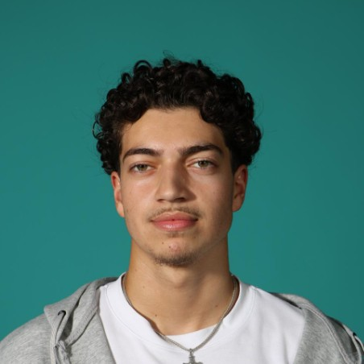

Over mij
Ik ben Julius, 19 jaar, uit Enschede. Leergierig, creatief en altijd bezig om mezelf verder te ontwikkelen.

Ik zit in mijn laatste jaar Media Vormgeving aan ROC van Twente, met een sterke interesse in grafisch ontwerp en visuele communicatie.
Tijdens mijn stage bij Stepp Footcare ontwierp ik allerlei communicatiemiddelen en deed ik professionele beeldbewerking in Photoshop. Daar merkte ik hoe leuk het is om voor een echte opdrachtgever te werken: iets maken dat daarna ook echt gebruikt wordt.
Naast school werk ik als Shop Advisor bij Odido. Daar leer ik elke dag hoe je goed communiceert met mensen en wat ze écht nodig hebben, en dat neem ik mee in mijn ontwerpen. Ik neem graag initiatief, werk zelfstandig maar net zo goed in een team, en sta open voor nieuwe ideeën.
Buiten werk en school sport ik veel: basketbal, voetbal en de gym. En ik maak graag foto's.
Neem contact op